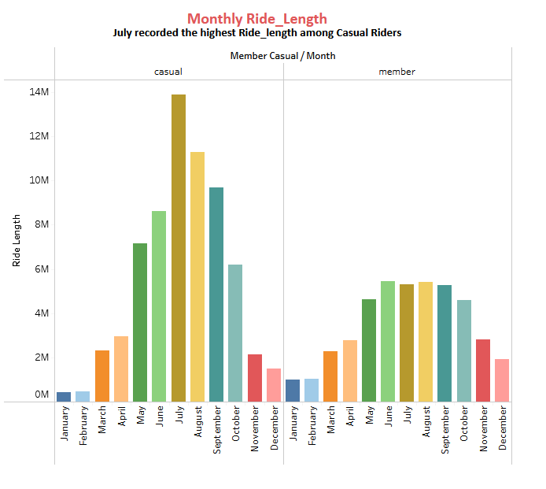
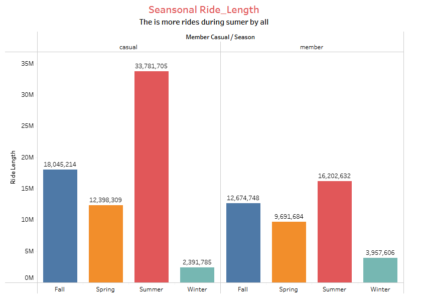
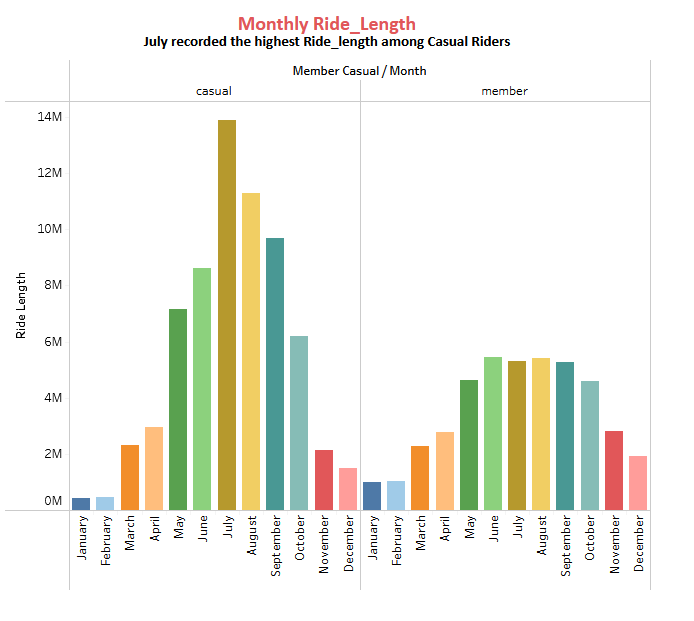
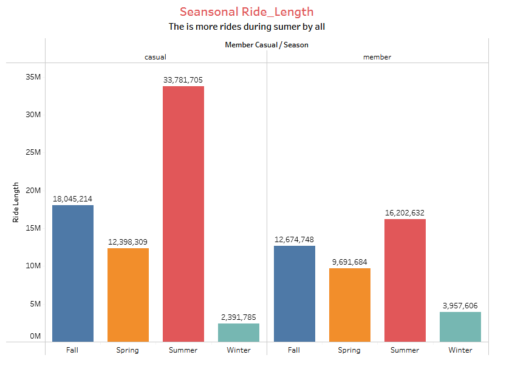

INTRODUCTION
This project was the final requirement to earn the Google Data Analytics Professional Certificate.
I worked on the Google Data Analytics Capstone Project, Track 1, Case Study 1.
Scenario
In this case study, I performed many real-world tasks of a junior data analyst. I worked for a fictional company, Cyclistic, a bike-share company in Chicago and met different characters and team members. In order to answer the key business questions, I followed the steps of data analysis process: Ask, Prepare, Process, Analyze, Share, and Act. The director of marketing believes the company’s future success depends on maximizing the number of annual memberships. Therefore, my team wants to understand how casual riders and annual members use Cyclistic bikes differently. From these insights, we would design a new marketing strategy to convert casual riders into annual members. Click here to know more about the company Cyclistic.
Below are the process I followed in Cleaning, Organizing, Analyzing and Visualizing the data, along with my final suggestions and summary of the data.
Business Objectives
- How do annual members and casual riders use Cyclistic bikes differently?
- Why would casual riders buy Cyclistic annual memberships?
- How can Cyclistic use digital media to influence casual riders to become members?
- Prepare Data
- Processing in R
- Visualization in R
- Processing in Tableau
- Tableau Dashboards
- Answering Business Questions
Prepare Data
I started by downloading the latest dataset for the project from divvy-tripdata. I downloaded the most recent one year dataset from July 2021 to June 2022. All the dataset are in .CSV format. I created a folder to store the files.
Processing in R
You can view my full R programming codes for this capstone project on my repository in GitHub. Having arranged the data according to data month in its folder. I opened RStudio and chose the session directory for the files. I started processing the data in the following steps.- Installed and Load all of the packages and libraries needed for the project: tidyverse, lubridate, hms, data.table.
- Uploaded all of the original data from the data source divvy-tripdata into R using read_csv function to upload all individual csv files and save them in separate data frames. For July 2021 data I saved it into jul21, August 2021 to aug21 till June 2022 which I save to jun22.
- Combined the 12 months (July 2021 to June 2022) of data together using rbind to create a one year view and parsed it to a new data frame named, "july21_jun22_trip".
- I used the remove() function to remove individual month data frame from the environment pane of Rstudio to clear up space.
- Created new data frames by parsing july21_jun22_trip to one_year_trip to retain original data. The new data frame, "one_year_trip" would contain all of my new columns.
- Created new columns on the "one_year_trip" data frame for:
- Ride Length - did this by subtracting end_at time from start_at time
- Day of the Week
- Date
- Month
- Season - Spring, Summer, Winter or Fall
- Year
- Cleaned the data by:
- Removing duplicate rows using distinct() function
- Remove rows with NA values (blank rows) using na.omit() function
- Remove where ride_length is 0 or negative (ride_length should be a positive number)
- Remove unnecessary columns: ride_id, start_station_id, end_station_id, start_lat, start_long, end_lat, end_lng.
- Calculated Total Rides for:
- Total number of rides which was just the row count = 5, 885, 392 - did this with count() function.
- Member type using sum() function which shows - Casual riders = 2, 550, 576 vs. Annual members = 3, 334, 816.
- Total number based on type of Bike - docked_bike = 251,856; classic_bike = 3,180,202; electric_bike = 2,453,334.
- Calculated Average Ride Length for:
- Total average ride length using mean() function = 18.54485mins
- Total ride length by all users using sum() function = 109143683 mins
- Then, I viewed the data I have prepared and processed using View() function.
- Downloaded the data frame using fwrite() function into my local directory which I would use for visualization later in Tableau.
Visualization in R
I ran few visualization on RStudio using ggplot and geom_bar functions. But because of the large size of the data and to put my skills to test I switched to Tableau for more Visualization effects.
Visualization in Tableau
I opened Tableau public and uploaded the cleaned dataset I downloaded from RStudio
To view my completed dashboard on Tableau public click here.
Created different graphs on Tableau which include:
- Total Rides by all users(Member & Casual riders)
- Total Rides by Bike Type
- Total Rides by Weekday
- Total Rides by Season
- Total Rides by Month
- Ride Length by all users(Member & Casual riders)
- Ride Length by Weekday
- Ride Length by Month
Tableau Dashboards
Below are summary of my Data Analysis as generated from Tableau Dashboard
 



Answering the Business Questions
- How do annual members and casual riders use Cyclistic bikes differently?
- Why would casual riders buy Cyclistic annual memberships?
- How can Cyclistic use digital media to influence casual riders to become members?
This is evident in the weekly ride and bike type. Casual riders are more active during weekends while members are almost the same but has more rides than casuals who spend more time on their trips. It was observed that Members did not use docked bike during the period of analysis and docked bikes recorded least use among casuals.
If Casuals riders buy Cyclistic annual memberships, they would have the opportunity to enjoy more ride during festive season such as Chritmas and New Year festivals, as it was seen that members have more rides between these periods of November to February
Cyclistic has to create more awareness during festive periods, that's between Novemebr and March, as casuals are developing interest to ride more they would see reasons to become members